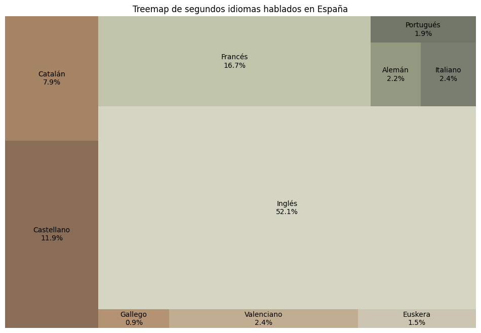
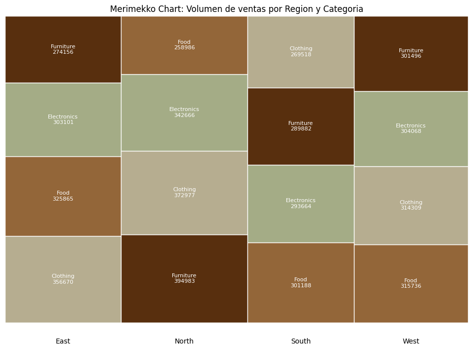
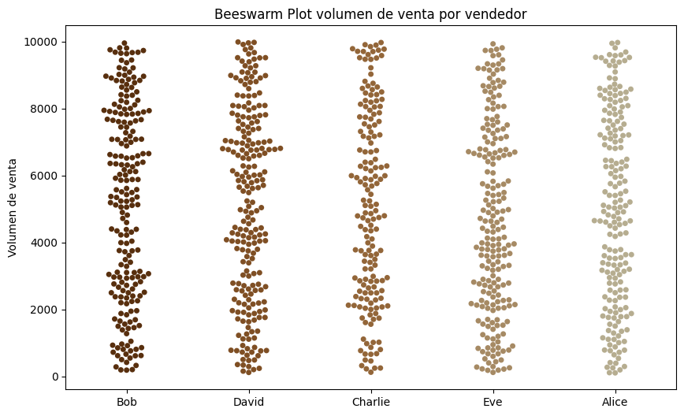

En esta práctica saldremos de nuestra zona de comfort y descubriremos 3 técnicas de visualización nuevas. En nuestro caso nos ha tocado familiarizarnos con Treemap, Marimekko Chart y Bee Swarm Chart.
Hemos creado todas nuestras visualizaciones en python usando librerias como matplotlib, seaborn o squarify.
La paleta de colores empleada ha sido obtenida de Coolors.
Las fuentes de datos consultadas han sido dos, una de datos.gob.es donde hemos obtenido el idioma no materno mas frecuente en España y tambien hemos consultado un dataset de ventas de una tienda de kaggle.Un treemap es una técnica de visualización que muestra datos cualitativos (categóricos) utilizando rectángulos. Cada rectángulo representa una categoría, y su tamaño es proporcional a una variable cuantitativa (por ejemplo, ventas, numero de personas, etc).
Origen: Inventado por el professor Ben Shneiderman en la Universidad de Maryland en la decada 1990s.
El tamaño del dataset no importa pero si debemos tener en cuenta el numero de categorias que tenemos ya que si hay muchas categorias distintas el treemap puede volverse dificil de interpretar, ya que los rectángulos muy pequeños pueden no ser legibles. Además la distribución no puede ser muy desigual ya que sino unos pocos rectángulos dominarían todo el espacio.
El gráfico Marimekko utiliza gráficos de barras apiladas de anchos variables para representar y mostrar datos categóricos de forma gráfica. La escala de porcentaje de cada segmento determina su altura y anchura. Por lo tanto, este gráfico te permite detectar fácilmente las relaciones entre categorías y subcategorías. El gráfico también se conoce como diagrama de mosaico.
Origen: El Marimekko chart tiene sus origenes en la década 1960s. El economista y estadístico finlandés Arvo A. Aho desarrollo el Marimekko chart mientras analizaba acciones de mercado y su segmentación.
Mismas limitaciones que el Treemap. Debemos tener un numero de categorias reducido ya que sino puede volverse dificil de interpretar, ya que los rectángulos muy pequeños pueden no ser legibles. Además la distribución no puede ser muy desigual ya que sino unos pocos rectángulos dominarían todo el espacio.
Un diagrama beeswarm o swarmplot es un tipo de visualización de datos que muestra puntos individuales de datos de tal forma que no se superponen, generando un efecto de "enjambre" que se asemeja a un grupo de abejas.
Este tipo de gráfico ayuda a revelar la distribución de los datos a lo largo de una variable numérica, resaltando la densidad y la variación de los datos de manera más efectiva que los scatter plots o los boxplots.
Aunque el algoritmo del beeswarm intenta evitar la superposición, con demasiados puntos el gráfico puede volverse visualmente saturado y difícil de interpretar.
